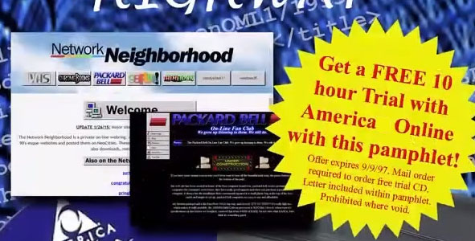

Overview
The Network Neighborhood was established in September of 2014 as an online webring. We made 90s and early 2000s style websites. Since then, we've branched out into video and we even have a GitHub page. Our websites provide entertainment, downloads, media, reading material, services such as search engine, and much more.

(Above) A section of the cover of a 90s tech-inspired pamphlet featuring the first Network Neighborhood website and the third version of Packard Bell. This is the oldest record we have of Network Neighborhood Site 1.0.
Frequently Asked Questions
What is this?
The Network Neighborhood is a private webring, like the ones from the 90s and early 2000s. We make websites in that style because of our combined passions for WWW creation, HyperText, and the general design aesthetics of the era.
You do realize that it's 2016, right?
Of course! Many of us do still have an interest in newer technology, but that’s not really what we focus on here. For some of us, it’s still 1996.
So is this all just "vaporwave" or something?
While some of us do have an interest in the vaporwave aesthetic and music genre, the Network Neighborhood is a bit more focused on 90s technology than vaporwave.
Why are you using NeoCities? Could you not afford a better, paid webhost?
We could, but working with NeoCities’ limitations can make it more interesting. When we first started in 2014, we were inspired by the webrings of the 90s on sites like GeoCities and Angelfire, and NeoCities seemed to be a perfect fit for our needs. (And yes, we realize that NeoCities isn't supposed to be capitalized that way.)


© 2014-2016 Network Neighborhood.